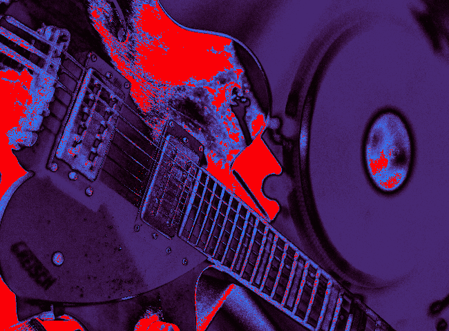

МЕСТНАЯ МУЗЫКАЛЬНАЯ СЦЕНА ПЕРЕЖИВАЕТ ТРУДНЫЙ ПЕРИОД
Закрытие площадок, рост цен и сокращение числа зрителей регулярно объявляются как свидетельство того, что местная музыка умирает. Между тем, новые промоутеры, временные площадки и импровизированные мероприятия продолжают появляться, а проблема, которую никому не удалось решить, по-прежнему актуальна.